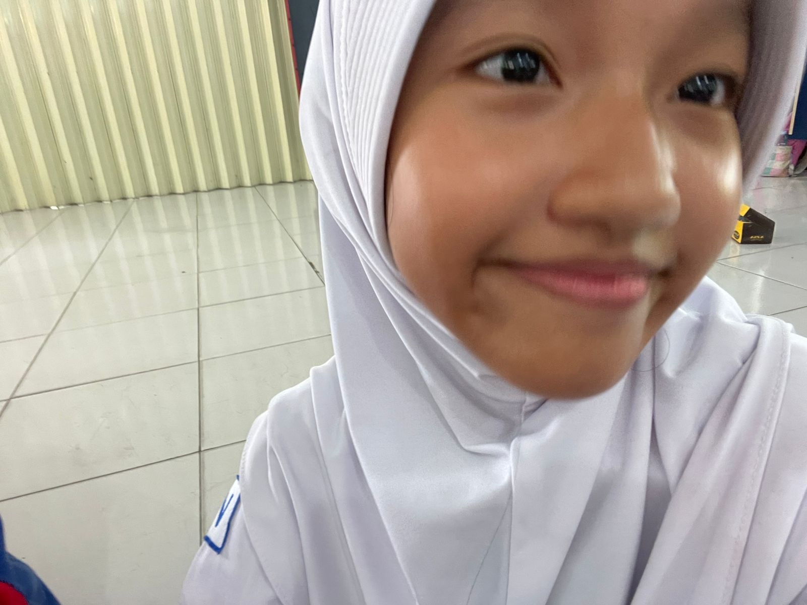
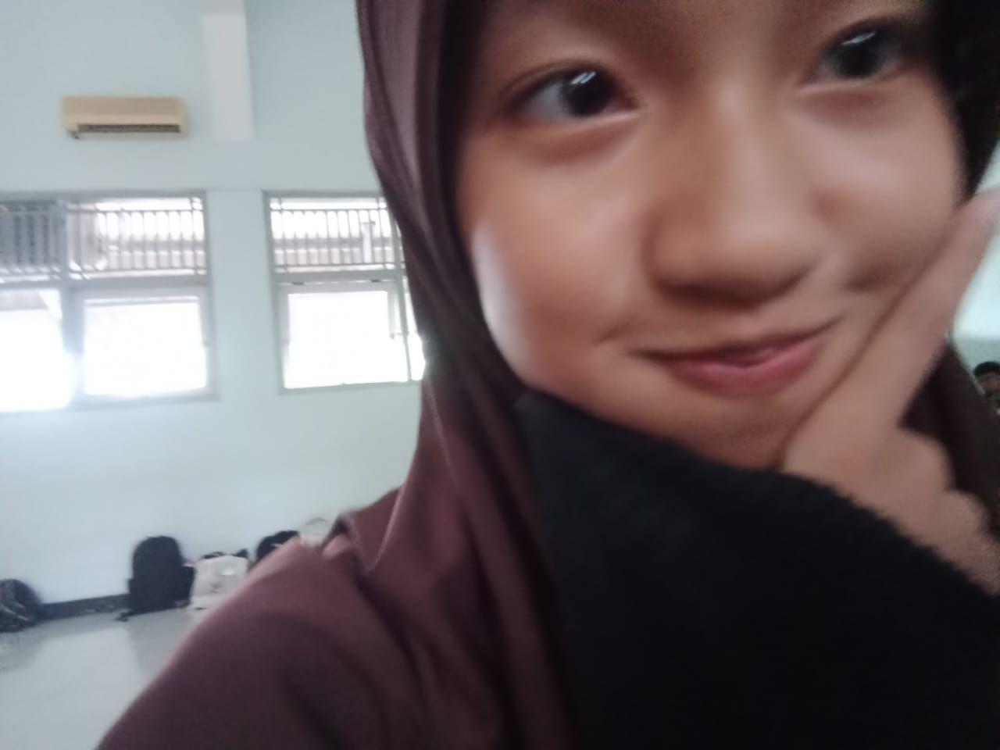
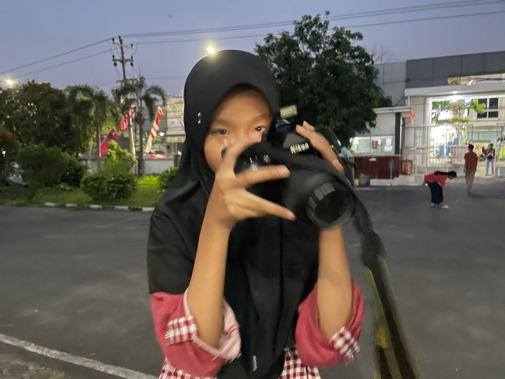

list yang dia suka:
- aku (kayanya sih, gatau juga)
- martabak manis kaya dia ahahaha (suka eskrim juga tapi gaboleh karna jumbara)
- warna kesukaannya pink, jadi website ini aku kasih tema pink
- idolanya renjun?!?! (gwh cemburu)
- game kesukaannya roblox (#roblox4life)
- dia suka kucing sedangkan kalo aku suka ni org



NI ORG CAKEP BANGETT GILAKK, AKU UDAH NGOMONG BERIBUU KALII SAMAA NII ORG